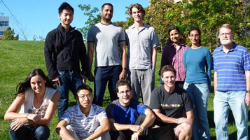
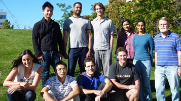

Mohn Lab People
Students, Post-Docs, Technicians and Alumni
 

Current Lab Personnel
• Gordon Stewart - Lab Manager
• Alissa Cait - Graduate Student
• Nelly Amenyogbe - Graduate Student
• Roland Wilhelm - Graduate Student
Roland Wilhelm - MSc, PhD Candidate
My background is in chemistry, biology and environmental science and I have since specialized in microbial ecology. I have experience with the challenges of extracting information about microbial community structure and function from marvelously complicated soil environments. I have expertise in balancing multifaceted wet-lab experiments with statistical and computational analyses, and how best to apply massive sequencing data to ecological questions.
[Website]• Erick Cardenas Poire - Post-Doctoral Fellow
Erick Cardenas Poire, PhD
I am a microbial ecologist who uses Bioinformatics and Statistical analysis tools to understand the roles of microorganisms in their natural environments. I study the microbial community contribution to biogeochemical cycles, their interactions with plants and humans, and their potential for bioremediation and bioconversion.
[Website]• Pedro Dimitriu - Post-Doctoral Fellow
• Johannes Holert - Post-Doctoral Fellow
• Colleen Kellogg - Post-Doctoral Fellow
• David Levy-Booth - Post-Doctoral Fellow
David Levy-Booth, PhD
Microbial carbon and nitrogen metabolism are key drivers of soil ecosystems function. My work focuses on the functional genetics of these metabolic processes in soil microbial communities using metagenomic and metatranscriptomic approaches.
• Hilary Leung - Technician
Lab Alumni
• Kendra Mitchell - Postdoctoral Fellow
• Songhua Zhu - Postdoctoral Fellow
• Martin Hartmann - Postdoctoral Fellow
• Somalinga Vijayakumar - Postdoctoral Fellow
• Mahbuba Rahman - Postdoctoral Fellow
• Daisuke Miyazawa - Postdoctoral Fellow
• Dominic Frigon - Postdoctoral Fellow
• Hirofumi Hara - Postdoctoral Fellow
• Edmilson Goncalves - Postdoctoral Fellow
• Zhongtang Yu - Postdoctoral Fellow
• Justin LeBlanc - Graduate Student
• Dave VanInsberghe - Graduate Student
• Kendra Swain - Graduate Student
• Julie Deslippe (Co-Supervised) - Graduate Student
• Kathy Bahadoorsingh (Co-Supervised) - Graduate Student
• Daryl Smith - Graduate Student
• Nancy Smith - Graduate Student
• KellyAnn Ross - Graduate Student
• Claire Stilwell - Graduate Student
• Mari Winkler - Graduate Student
• Pat Ekpanyaskun - Graduate Student
• Josh Neufeld - Graduate Student
• Eric Thomassin-Lacroix - Graduate Student
• Emma Master - Graduate Student
• Annette Muttray - Graduate Student
• Bianca Kuipers (Co-Supervised) - Graduate Student
• Vincent Martin - Graduate Student
• Ann Wilson - Graduate Student
• Tai Man Louie - Graduate Student
Long-Term Visitors
• Martin Hernandez, PhD project, University of Patagonia San Juan Bosco, Argentina
• Jacques Mathieu, PhD project, Rice University, USA
• Susan Weening, MSc project, Leiden University, Netherlands
• Chris Sales, PhD project, University of California Berkeley, USA
• Josh Sharp, PhD project, University of California Berkeley, USA
• Mari Winkler, MSc project, University Essen-Duisburg, Germany
• Manuela Trummer, Diplomarbeit project, University of Applied Science, Emden, Germany
• Maria Navarro Llorens, Sabbatical, Universidad Complutense, Madrid, Spain
• Jong-Ok Ka, Sabbatical, Seoul National University, Korea
• Mikael Eriksson, PhD student, Royal Institute of Technology, Sweden
• Karolina Westerberg, fil. Mag. project, Uppsala University, Sweden